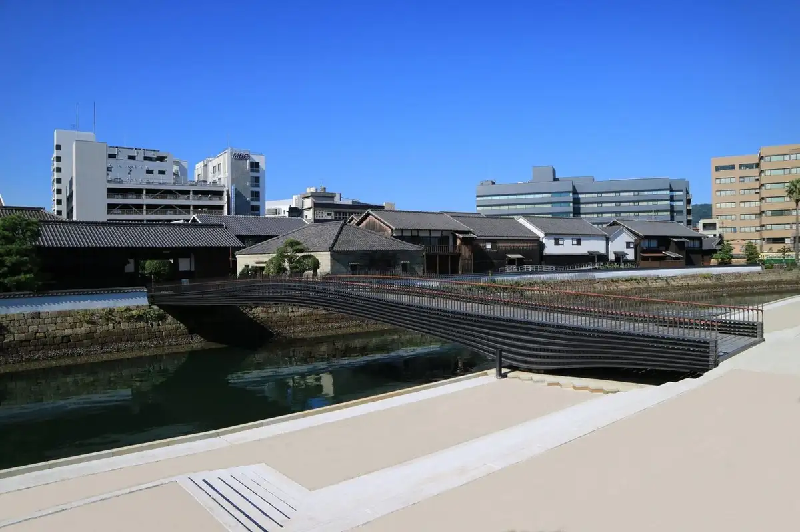
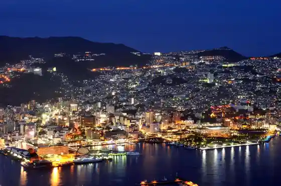
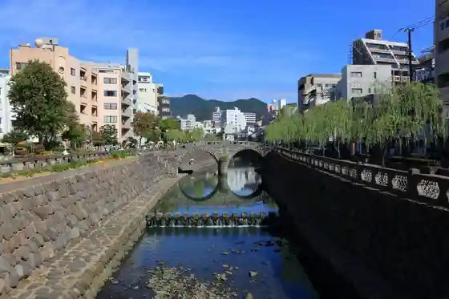

Nagasaki
Nagasaki · Nagasaki
Nagasaki
Highlighted on the Nagasaki map.

Sights
Dejima
Heiwa Park (Heiwa Kinen Zo Heiwa no Izumi)
Haji Shima (Gunkan Shima)
Inasayama

Megane Hashi

Oratenshudo
Oranda Saka
Guraba Sono
Nagasaki Ropuei
Hama Town A Ga Do
Ippon Hashira Torii (Sanno Shrine)
Nagasaki Shinchi Chukagai
Sofuku Tera
Nagasaki Eki
Heiwa Park (Gembaku Rakkachu Kokochi)
Nagasaki Pengin Aquarium
Nabe Kanmuriyama Park
Nagasaki Kameyama Shachu Memorial Museum
Ruri Iori Rurian Glass Studios,Inc.
Chinzei Taisha Suwa Shrine
Tsukimachi Nagasaki Alley
Tojin Yashikiato
Shian Hashi
Nagasaki Sogo Tourist Information
Shiroyama Shogakko (Shiroyama Shogakko Heiwa Kinen Kan)
Tomei Yama Kofuku Tera
Nyoko Do
Nagasaki Kaido Kamome Market
i+Land nagasaki (Ai Land Nagasaki)
Yamazato Shogakko
Benekkusu Kyoryu Museum
Nagasaki Gembaku Museum
Nagasaki Rekishi Bunka Museum
Kaze Atama Park
Nagasaki Koshi Byo Chugoku Rekidai Museum
Amyu Plaza Nagasaki
Gurabasukairodo
Gunkan Shima Dejitaru Museum
Fuku Sumi Tera
Irohaya Dejima Main Shop
Nagasaki Nagai Takashi Memorial Museum
Nagasaki Dejima Wafu
Nagasaki Inasayama Suropuka
Kyu Nagasaki Eikokuryo Koto Kan
Chuo Koen Kaijo
Historic Site Ryotei Kagetsu
Nagasaki Sutajiamushitei
Aguri no Oka
Shiiboruto Memorial Museum
Hibaku Kusu no Ki
Nagasaki Ken Art Museum
Minamiyamate Dentoteki Kenzobutsu Gun Hozon Chiku
Manju Yama Shofuku Tera
Kyu Nagasaki Naigai Club (Dejima Nai)
Sen Kachi Kaku
I O Shima Lighthouse
Gongen Yama Tembo Park
Roadside Station Yuhigaoka Sotome
Mihara Garden
Ryoma no Butsu Zo
Kakidomari Shirahama
Aguri Domu
Shinchi Chukagai Kaijo
Gaikai no Shutsu Tsu Shuraku
Kinen Saka
Higashiyama Te Yofu Jutaku Gun (7 to)
Minato Park
Nippon Niju Roku Seijin Memorial Museum
Hama Nmachi Kaijo
Mini Dejima (Dejima Nai)
Taki no Kannon
Ark Land Spa
Higashiyama Tekko Jusan Ban Kan
Ora Tembo Park
Endoshusaku Literature Museum
Nagasaki Kyu Honkon Shanhai Ginko Nagasaki Branch Memorial Museum
Higashiyama Tetsudai to Teki Kenzobutsu Gun Hozon Chiku
Takahama Beach
Nagasaki Science Museum (Sutashippu)
Higashiyama Te Juni Ban Kan (Kyukyo Ryu Chi Shigaku History Museum)
Takashima Tanko Hokkei Seiko Ato
Dondon Saka
Megami Bridge
Naka no Chaya (Shimizu Kon Tenjikan)
Nagasaki Minato Taminaru
Wakamiya Inari Shrine
Suisen no Oka (Nagasaki no Mozaki Kyoryu Park)
Nagasaki Suihen no Mori Park
Gaikai Senpuku Kirishitan Bunka Museum
Shutsu Tsu Bunka Village : Nagasaki Gaikai Folk History Museum
Umezono Migawari Tenmangu Shrine
Ikejima Tanko Ato
National Nagasaki Gembaku Shibotsu Mono Tsuito Heiwa Kinen Kan
Takashima Tobishima Isozuri Ri Park
i+Land nagasaki Misaki Kafe
Heifuri Saka
Ryoma Tori
Nagasaki Minato Matsugaedakuni Kiwa Taminaru
Tojin Yashiki Kaijo
Sakamoto Kokusai Bochi
Daisan Senkyo
Nagasaki Gunkan Shima Museum
Izumo Kinrin Park
I O Shima Beach Kosuta Deru Soru
Takashima Beach
Sotome Kamiura Kawa River Park
Nagasaki Folk History Museum
Noguchi Yataro Kinen Art Museum
Nakajima Kawa Koen Kaijo
Jaianto Kanchirebakuren
Daitoku Tera no Dai Kusu
Gaikai no Ono Shuraku
MINATO SPA Gamban TERRACE
Kosuge Osamu Semba Ato
Peace Cafe (Nagasaki Gembaku Museum Nai)
Nagasaki Kencho
Nagasakipiisu Museum
Daitoku Tera Park
Kan Zen Tera no Dai Kusu (Kanzenji no Okusu)
Doza Kawa (Shinchi Chukagai Kaijo)
Kyu Kigata Ba (Mitsubishi Jukogyo (Kabu) Nagasaki Zosenjo (Shiryo Kan))
Kinkai Akamizu Park
Kinkai Chuo Park
Daichu O Tanada
Kyu Tojin Yashikiuchi Tsuchigami Do Kannon Do Tenko Do
Tateyama Park
Kokoro Ta Iori
Takashima Shuhan Kyutaku
Inori no Oka Ehon Art Museum
Kiyomizudera
Inasa Goshin Tera Kokusai Bochi
Shiiboruto Taku Ato
Nagasaki no Mozaki Kyoryu Park (Kyu Nomozaki Sogo Sports Park)
Maruyama Oranda Saka
Nagasaki Kemban
Shutsu Tsu Bunka Village : Chinmoku no Hi
Retoro Shashinkan
Ogoe Tera
Nagasaki Kenmin Forest
Shutsu Tsu Bunka Village : Kyu Shutsu Tsu Kyujo In
Sakamoto Ryoma Yuki Zo
Minamiyamate Resutohausu (Kyu Shimizu Shi House)
Nagasaki Resort Ai Land Pasaju Kinkai
Shutsu Tsu Bunka Village : Do Ro Shinpu Memorial Museum
Senpuku Jidai no Kirishitan Bohi
Ono Hama Seaside Park
Enpuku Tera
Nagasaki Chosha
Nakajima Kawaishi Hashi Gun (Amida Hashi Korai Hashi Momo Kei Hashi Fukuro Hashi)
Takashima Iyashi Baths
Takashima Sekitan Museum
Kokusai Kaitei Densen Shogakura Rikuage Ko
Nagasaki Minamiyamate Chiku Streetscape Hozon Center
Kawara Oike Park
Kabashima Todai Park
Nagasaki Minamiyamate Resutohausu
Nagasaki Sakura no Sato Park
Mikaeri Yanagi
Kyoroku Ie Gi Yuki En Kyodai no Haka (Ogakegishienkyodai no Haka)
Shokunin Jin (Hori Mono)
Nagasaki Higashiyama Te Chiku Streetscape Hozon Center
Hon Kawauchi Takabe Chosuichi Nai Ishibashi
Nagasaki Kinsei Kansoku Hi Kansoku Dai
Kurosaki Nagata Shitchi Nature Park
Nagasaki Sazae Su Ga to Park
Omoi Setsu Hashi Ato
Nagasaki Park
Higashiyama Te (Chikyu Kan) café slow
Ogawa Tako Mise (Nagasaki Tako Museum)
Onagi Seisokuchi
Kyuhon Taya House
Hoka Yama Kama Ato
I O Shima Bridge
Furukawa Town Tenmangu Shrine no Torii
Shogakura no Shukyoku Chiso
Nagasaki Daiba Ato Uomi Gaku Daiba Ato
no Mozaki no Chiisa Na Aquarium Sango Sho no Ie
Pintoko Saka
Koyagi General Park
Peninshuraonazugorufu Club
Nishiyama Shrine no Kanzakura
to Tsuji Hayashi Kan Ume Ie Bochi
Wakimisaki no Asagao Gunraku
Tanase (Beach Rokku)
Tokai no Haka
Sango
Kannon Tera
Mitoka Eiji Dezain 310 Go (Minato)
Bo Tsuka Kuhi
Gen Kawa Yaki to Kamato
Kamado (Kamado) Shrine no Dai Kusu
Ichi no Seguchi
Motegi Shokubutsu Kaseki So
Ora Kokusai Bochi
Yuhigaoka Tembo Tokoro
Nagasaki I O Shima Todai Memorial Museum (I O Shima Todai Kyu Riin Tai Iki Tokoro)
Kasseki Daijin Miya Shaso
Gongen Yama Park Lookout
Furuhashi (Nakagawa Hashi)
Ko Dai Tera no Bonsho (Kotaiji no Bonsho)
Ko Dai Tera no Mukai Ie Bochi
Toishi no Rokujizo to
Miya Suri Yama N Kami no Shaso (Miyazuriyamankami no Shaso)
Hon Kawauchi Hokyo Into (Hongochihokyointo)
Ko Town Bansho Ato (Shi Go Roku Shichi Ban Sekihyo Hashira)
Yagami Hachiman Shrine no Dai Kusu
Motoki Shozo no Haka
Nita O Kuyo to Zanketsu Gun (Nitaokuyotozanketsugun)
Shikimi no E no Ki
Koyagi Katorikku Kyokai
Nagasaki Tenjin Matsumori Tenmangu Shrine
Kenperu, Tsuyumberii Kinenhi
Shu no Ga Ringupikunikku
Oshanparesugorufu Club & Resort
Matsumori Shrine no Kusu no Ki Gun
Nishiyama Shrine no Zabon no Ki
Shimin no Mori Kyuyo Shukuhakushisetsu (Kebin)
Takashima Fureai Campground
Gokan no Haka
Takagi Ie Bochi
Tobo Sanpo Dai Ato
Nishikawa Joken no Haka
Kitaharahakushu Kahi
Guraba Bettei Ato
Gen Kawa Yaki Kankei Seko no Ishihokora Sekibutsu
Motomiya Park
Motegi Michi Muen to
Kyoku Saki Kofun Gun (Magarizakikofungun)
Nojima Juso (no Jimajuso)
Aihachi no Haka
Seido to (Karakaneto)
Misaki no Kannon Zendera
Takashima Ie Bochi